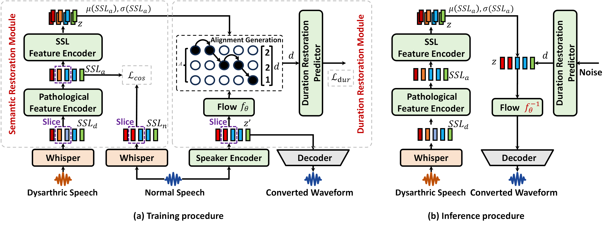

In this demo page, we report audio demos generated by SemPro-DVC on the CDSD corpus.
Abstract
Dysarthric voice conversion (DVC) aims to convert dysarthric speech into normal-sounding speech. However, large acoustic deviations, such as discontinuous pronunciation, hoarseness, and irregular pauses, pose significant challenges. Existing approaches suffer from two key limitations: 1) the reliance on various auxiliary learning strategies or text annotations, which limit scalability and conversion quality. 2) the distinct pronunciation, prosody, morphology, and syntax of Chinese, together with abundant homophones and polyphones, render English dysarthric speech resources insufficient for Chinese DVC tasks. To address these issues, we propose SemPro-DVC, a novel framework for Chinese DVC. First, we leverage self-supervised learning (SSL) features extracted from both dysarthric and healthy speech, eliminating the need for text or auxiliary strategies. Second, a Semantic Restoration Module (SRM) is designed to map pathological to normal speech at the semantic level, while a Prosody Restoration Module (PRM) is introduced to handle interrupted articulation and prosodic deficits in dysarthric speech. Experiments conducted on the large-scale Mandarin CDSD corpus demonstrate that SemPro-DVC achieves state-of-the-art performance, with the highest relative character error rate reduction of 61.7\% and the highest subjective mean opinion score of 4.48, validating the effectiveness for Chinese DVC task.
Diagram and example of SemPro-DVC
System Comparison
- Original: Original dysarthric speech.
- Reference: Healthy speech from control speaker 185.
- ASR-TTS: ASR-TTS system consists of an open-sourced ASR model (Whisper) and a TTS method (VITS), where this Whisper model is the same as the SSL feature extraction module of our framework.
- Seed-VC: a novel framework that addresses timbre leakage, insufficient timbre representation, and mismatches between training and inference tasks by introducing an external timbre shifter during training to perturb the source speech timbre, mitigating leakage and aligning training with inference.